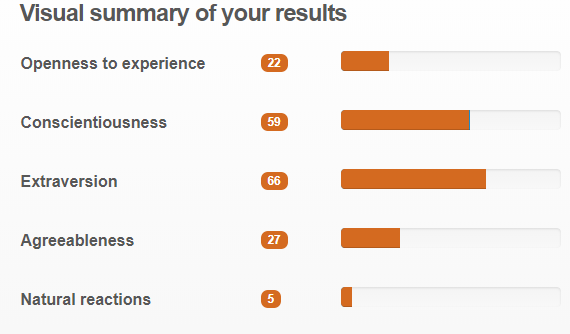

Lewis Martin
Home | Profile | Future | Project IdeaMy Profile
Personal Information
Name - Lewis Martin
Student Number - s3775633
Email - s3775633@student.rmit.edu.au
Nationality - Australia
Education - High School Certificate | Certificate IV in Programming.
Interest in Information Technology
| I became interested in Information Technology from a young age, growing up throughout the 90’s to now I have witness vast
improvements within the IT industry is such a short time. These vast developments have excited me throughout my life and I
would really love to be apart of the industry and to try to put my own stamp on the future development of IT. My previous
experiences in IT include just day to day tinkering with my devices, from building my own computer, helping family and friends
with their IT problems or trying to replace my cracked phone screen (for the 5th time), I also have a clear grasp with programming
and am efficient with C#, Java, and SQL server, although I can always be better. I chose to come to RMIT University to start and complete my Bachelor of Information Technology, my reasoning for this choice is because I wanted to delve into the world of IT and expand from just programming, I wanted to challenge myself and I believe that RMIT that has one of the best IT courses that any of the Australian universities can offer. So far, I am really enjoying the content of the course, I am eager to learn new things and develop my skills with all things IT. Throughout my studies I expect to be given the knowledge and background required to become an efficient attribute within the IT industry, I want to develop my programming skills and hardware skills. I also want to develop some skills that may not directly be related to IT, this includes my team working skills, my presentations skills and my overall communication skills. |
Online Tests
Myers-Briggs Test | Learning Style Test


Big 5 Personality Test
 .png)